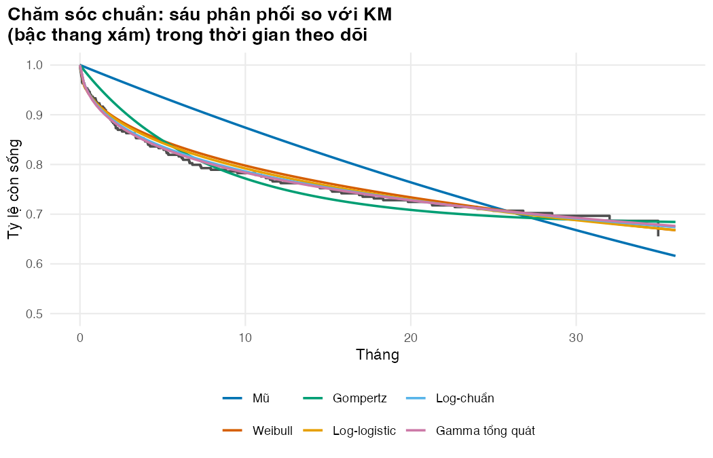
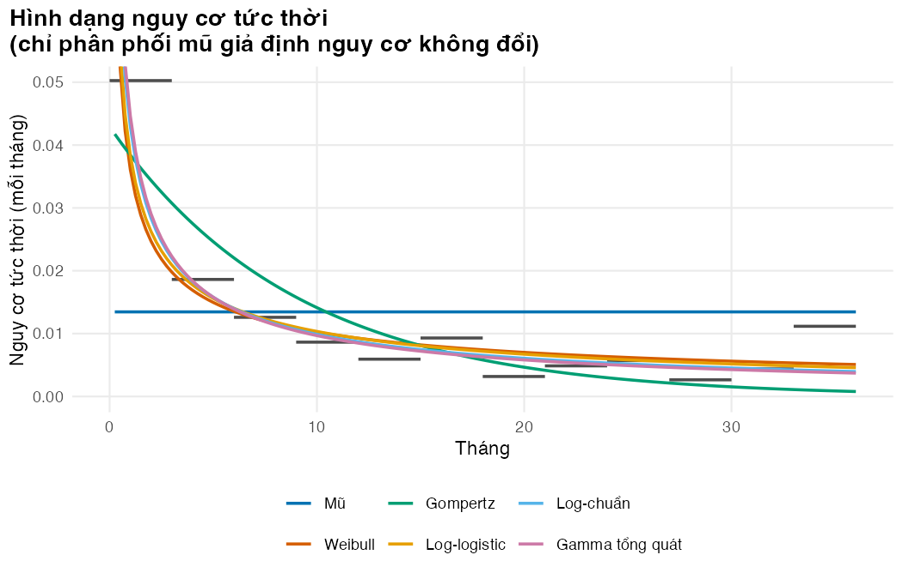
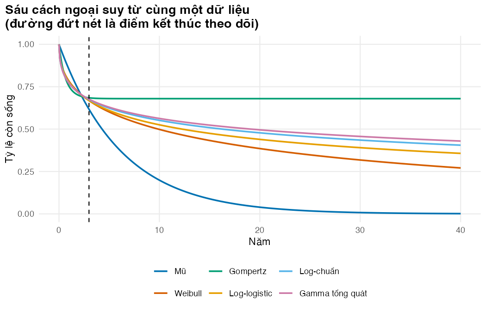
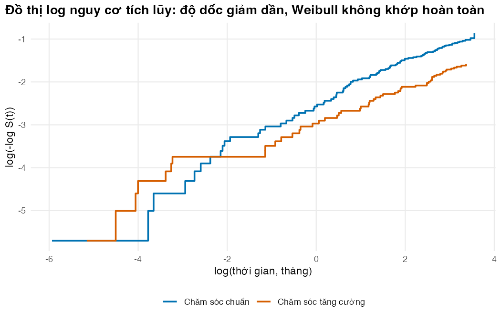

if (!isTRUE(l10n_info()[["UTF-8"]])) invisible(Sys.setlocale("LC_CTYPE", "en_US.UTF-8"))
source("../_shared/R/helpers.R")
source("../_shared/R/vn_data.R") # course-wide context, unit prices and life table
source("code/model.R")
suppressPackageStartupMessages({
library(ggplot2)
library(survival)
library(flexsurv)
})
ps <- read_params("params/sim_truth.csv")
pm <- read_params("params/model_inputs.csv")
cfg <- read_params("params/lesson_settings.csv")
ctx <- vn_context() # course-wide: discount rate, threshold, exchange rate, wages
pr <- vn_prices() # course-wide unit prices (BHYT fees, tests, ART, bed-days)
inp <- build_inputs(pm, ctx, pr) # decision-model inputs: module values + shared values and prices
lt <- vn_lifetable("both") # WHO life table, Viet Nam 2023, both sexes
trial <- simulate_trial(ps, lt, seed = SEED_TRIAL)
d_soc <- endpoint_data(trial, "os", "soc")
d_enh <- endpoint_data(trial, "os", "enh")Bài 2: Mô hình sống còn tham số với flexsurv
Khớp sáu phân phối, so sánh chúng, và thấy vì sao khớp tốt chưa chắc ngoại suy đúng
Vì sao bạn nên quan tâm?
Một công ty nộp hồ sơ đề nghị BHYT chi trả cho một thuốc mới, kèm mô hình kinh tế ngoại suy đường sống còn bằng một phân phối duy nhất. Với chính dữ liệu của bài này, ba phân phối có AIC tốt nhất chỉ cách nhau 2.7 điểm nhưng cho thời gian sống trung bình giới hạn chênh nhau 3.5 năm mỗi người. Ở mốc quy ước 1 × GDP bình quân đầu người, 125,500,000 VNĐ cho mỗi QALY (Cục Thống kê (Bộ Tài chính) 2026; Ong và c.s. 2026), chênh lệch ấy (quy theo thỏa dụng 0.65 khi chưa có biến cố) trị giá khoảng 285,000,000 VNĐ mỗi người, bằng 54 tháng lương tối thiểu vùng I (Chính phủ 2025). Bài này giúp bạn tự khớp các phân phối và hiểu vì sao “AIC thấp nhất” chưa đủ để chọn phân tích cơ sở.
Mục tiêu học tập
Sau bài này, bạn có thể:
- Mô tả sáu phân phối sống còn thường dùng và hình dạng nguy cơ tức thời của chúng.
- Khớp chúng bằng
flexsurvreg()và đọc tham số theo cáchflexsurvđịnh nghĩa. - So sánh mô hình bằng tiêu chí thông tin Akaike (AIC) và Bayes (BIC), đồ thị so với KM và đồ thị nguy cơ tức thời.
- Giải thích vì sao AIC thấp nhất chưa chắc cho ngoại suy hợp lý, và cân nhắc khớp riêng hay khớp chung.
Ý chính
- Mô hình sống còn tham số (parametric survival model) thay KM bằng một công thức S(t) vài tham số: đường cong trơn, kéo dài được ra ngoài thời gian theo dõi.
- Mỗi phân phối áp một hình dạng nguy cơ tức thời: mũ (không đổi), Weibull và Gompertz (đơn điệu), log-logistic và log-chuẩn (có thể tăng rồi giảm), gamma tổng quát (linh hoạt).
- AIC và BIC chỉ đo mức phù hợp trong thời gian theo dõi, không nói gì về phần ngoại suy.
- Các mô hình gần như trùng nhau trong thời gian theo dõi có thể khác nhau nhiều năm sống khi kéo dài trọn đời.
- Gompertz với tham số hình dạng âm cho một tỷ lệ người “không bao giờ chết”: chỉ dùng khi đã thêm tử vong nền (Bài 3).
- Module dùng cùng một họ phân phối cho hai nhánh để so sánh công bằng; khớp riêng hay chung cần có lý do.
Nội dung
Từ KM tới một công thức
KM là bậc thang và dừng ở cuối theo dõi (Bài 1). Mô hình tham số giả định thời gian sống theo một phân phối và ước lượng tham số bằng hàm hợp lý (likelihood) có tính tới kiểm duyệt: người tử vong tại \(t_i\) đóng góp \(f(t_i)\), người bị kiểm duyệt đóng góp \(S(t_i)\). Gói flexsurv làm việc này cho nhiều phân phối với cùng cú pháp (Jackson 2016).
Sáu phân phối và hình dạng nguy cơ tức thời
| Phân phối | S(t) | Hình dạng nguy cơ tức thời | Tham số trong flexsurv |
|---|---|---|---|
| Mũ (exponential) | \(e^{-\lambda t}\) | không đổi | rate |
| Weibull | \(e^{-(t/b)^a}\) | đơn điệu: giảm nếu \(a<1\), tăng nếu \(a>1\) | shape \(a\), scale \(b\) |
| Gompertz | \(\exp\{-\tfrac{b}{a}(e^{at}-1)\}\) | tăng hoặc giảm theo hàm mũ; \(a<0\) tạo “bình nguyên” | shape \(a\), rate \(b\) |
| Log-logistic | \(1/(1+(t/b)^a)\) | giảm, hoặc tăng rồi giảm nếu \(a>1\) | shape, scale |
| Log-chuẩn | \(1-\Phi\{(\log t-\mu)/\sigma\}\) | tăng rồi giảm, đuôi dài | meanlog \(\mu\), sdlog \(\sigma\) |
| Gamma tổng quát | ba tham số | rất linh hoạt; chứa Weibull, log-chuẩn, mũ là trường hợp riêng | mu, sigma, Q |
Ở nhánh chăm sóc chuẩn, Weibull ước lượng tham số hình dạng 0.45: nhỏ hơn 1, tức nguy cơ giảm dần, khớp với nguy cơ thô của Bài 1. Phân phối mũ, với nguy cơ không đổi, mâu thuẫn trực tiếp với dữ liệu.
Bốn lăng kính để chọn mô hình
Một tổng quan các thẩm định ung thư của NICE thấy không thẩm định nào biện minh có hệ thống cho mô hình đã chọn, và đề xuất quy trình gồm thống kê, đồ thị và tính hợp lý của ngoại suy (Latimer 2013, 2011).
- AIC và BIC. AIC = −2 log L + 2k, BIC thay 2k bằng k·log(n), nên phạt tham số nặng hơn. Theo quy ước thực hành, chênh lệch AIC dưới khoảng 2 coi như tương đương. Ở nhánh chăm sóc chuẩn, mô hình log-chuẩn có AIC thấp nhất; gamma tổng quát, log-logistic, Weibull kém hơn lần lượt 1.8, 2.7, 4.5 điểm, còn phân phối mũ kém tới 87.6 điểm.
- Đường cong so với KM, nhất là ở phần cuối, nơi ngoại suy bắt đầu.
- Nguy cơ tức thời so với nguy cơ thô. Đồ thị log(−log S(t)) theo log(t): đường thẳng gợi ý Weibull, hai nhánh song song gợi ý nguy cơ tỷ lệ (proportional hazards).
- Tính hợp lý lâm sàng và dữ liệu ngoài: tỷ lệ sống ở 5, 10, 20 năm có hợp lý với người bệnh lao có HIV đang điều trị ARV (ART) không? (Bài 3.)
Khớp tốt không có nghĩa là ngoại suy đúng
Kéo dài sáu đường cong tới khung thời gian 60 năm và lấy diện tích dưới mỗi đường: đó là thời gian sống trung bình giới hạn (RMST), không phải trung bình không giới hạn. Ba mô hình có AIC tốt nhất cho RMST chênh nhau 3.5 năm, trong khi Weibull cho 21.8 năm và phân phối mũ chỉ 6.2 năm. Gompertz ở đây ước lượng tham số hình dạng âm, nên đường cong đi ngang ở 68.0% mãi mãi, như thể chừng ấy người bệnh không bao giờ chết (trung bình không giới hạn là vô hạn). Mọi khác biệt này nằm ngoài dữ liệu: trong 36 tháng theo dõi, các đường gần như chồng lên nhau. Bài 3 thêm tử vong nền để loại các đường cong phi lý.
Khớp riêng hay khớp chung
Khớp riêng: mỗi nhánh một mô hình, linh hoạt nhất. Khớp chung: một mô hình có biến nhánh, ép hai nhánh dùng chung hình dạng. Với Weibull, Gompertz và mũ, khớp chung là giả định nguy cơ tỷ lệ; với log-chuẩn và log-logistic, là giả định thời gian gia tốc (accelerated failure time). Đồ thị log nguy cơ tích lũy và đồ thị phân vị giúp chọn giữa hai cách (Latimer 2011).
Với log-chuẩn, khớp chung có AIC 1,465.1 so với 1,464.4 của hai mô hình riêng, ít hơn một tham số: gần như tương đương, nên một sdlog chung chấp nhận được. Khớp riêng cho sdlog 3.75 ở nhánh chuẩn và 4.73 ở nhánh tăng cường, nên hai đuôi phân kỳ và có thể đẩy xa lợi ích ngoại suy. Bài 5 vì thế dùng khớp riêng làm cơ sở (cùng cách với STM) và khớp chung làm kịch bản. Hệ số nhánh của mô hình chung là một tỷ số thời gian: chăm sóc tăng cường kéo dài thời gian sống theo hệ số 4.25 (rất bất định). Kiểm định phần dư Schoenfeld cho tỷ số nguy cơ tức thời (HR) của nhánh có p = 0.85, không bác bỏ nguy cơ tỷ lệ trong thời gian theo dõi; đó không phải bằng chứng HR giữ nguyên suốt đời (Bài 4).
Thực hành
Nạp hàm, tham số, thử nghiệm mô phỏng (như Bài 1) và gói flexsurv; tách dữ liệu OS của hai nhánh.
Khớp sáu phân phối cho mỗi nhánh bằng fit_dists() và xếp hạng theo AIC. Kiểm tra: mọi lần tối ưu hóa hội tụ, AIC tính lại bằng tay khớp flexsurv, phân phối mũ đứng cuối.
# Six candidate distributions, fitted separately to each arm (no shared shape)
fits_soc <- fit_dists(d_soc)
fits_enh <- fit_dists(d_enh)
gof_soc <- gof_table(fits_soc)
gof_enh <- gof_table(fits_enh)
gof_soc[, c("label", "n_par", "loglik", "AIC", "BIC", "delta_AIC")] label n_par loglik AIC BIC delta_AIC
5 Log-chuẩn 2 -438.2671 880.5342 887.9418 0.000000
6 Gamma tổng quát 3 -438.1729 882.3458 893.4572 1.811627
4 Log-logistic 2 -439.6277 883.2555 890.6631 2.721272
2 Weibull 2 -440.5295 885.0589 892.4665 4.524694
3 Gompertz 2 -450.8447 905.6894 913.0970 25.155170
1 Mũ 1 -483.0521 968.1041 971.8079 87.569893# Checks: every optimisation converged and AIC = -2 logL + 2k
for (f in c(fits_soc, fits_enh)) stopifnot(f$opt$convergence == 0)
stopifnot(all(abs(gof_soc$AIC - (-2 * gof_soc$loglik + 2 * gof_soc$n_par)) < 1e-8))
# Prose claim: the exponential (constant hazard) fits worst
stopifnot(gof_soc$dist[nrow(gof_soc)] == "exp")Đọc tham số Weibull và tính S(t) bằng công thức trong bảng; kết quả phải trùng flexsurv tới sai số máy. Làm tương tự cho log-chuẩn: cách chắc chắn nhất để hiểu tham số hóa của gói.
# What flexsurv computes for the Weibull: S(t) = exp(-(t / scale)^shape)
wb <- fits_soc$weibull
wb_par <- wb$res[, "est"]
wb_par shape scale
0.4529901 266.3675862 # Prose claim: Weibull shape below 1 means a hazard that falls over time
stopifnot(wb_par[["shape"]] < 1)
t_check <- c(1, 6, 12, 24, 120)
S_hand <- exp(-(t_check / wb_par[["scale"]])^wb_par[["shape"]])
S_flexsurv <- fit_curve(wb, t_check)
round(rbind(S_hand, S_flexsurv), 4) [,1] [,2] [,3] [,4] [,5]
S_hand 0.9234 0.8358 0.7823 0.7145 0.4982
S_flexsurv 0.9234 0.8358 0.7823 0.7145 0.4982stopifnot(all(abs(S_hand - S_flexsurv) < 1e-10))
# Same idea for the log-normal: S(t) = 1 - pnorm((log t - meanlog) / sdlog)
ln_par <- fits_soc$lnorm$res[, "est"]
stopifnot(all(abs(1 - pnorm((log(t_check) - ln_par[["meanlog"]]) / ln_par[["sdlog"]]) -
fit_curve(fits_soc$lnorm, t_check)) < 1e-10))So sáu đường cong với KM trong thời gian theo dõi: đường mũ lệch rõ ở những tháng đầu, các đường khác gần nhau.
t_trial <- seq(0, ps$study_months, by = 0.25)
km_soc <- km_by_hand(d_soc$time, d_soc$status)
km_df <- data.frame(time = c(0, km_soc$time), surv = c(1, km_soc$surv))
cur_trial <- curves_long(fits_soc, t_trial)
cur_trial$label <- factor(DIST_LABELS[cur_trial$dist], levels = DIST_LABELS)
fig_fit <- ggplot() +
geom_step(data = km_df, aes(time, surv), colour = "grey30", linewidth = 0.8) +
geom_line(data = cur_trial, aes(time, value, colour = label), linewidth = 0.8) +
scale_colour_manual(values = pal_course[1:6], name = NULL) +
coord_cartesian(ylim = c(0.5, 1)) +
labs(x = "Tháng", y = "Tỷ lệ còn sống",
title = "Chăm sóc chuẩn: sáu phân phối so với KM\n(bậc thang xám) trong thời gian theo dõi") +
theme_course()
save_fig(fig_fit, "l02-fit-within.png")
So nguy cơ tức thời của từng mô hình với nguy cơ thô (Bài 1): mô hình nào nắm được nguy cơ cao lúc đầu rồi giảm nhanh?
# Fitted hazards against the crude 3-month hazards of Lesson 1
t_hz <- seq(0.25, ps$study_months, by = 0.25)
cur_hz <- curves_long(fits_soc, t_hz, type = "hazard")
cur_hz$label <- factor(DIST_LABELS[cur_hz$dist], levels = DIST_LABELS)
crude <- interval_hazard(d_soc$time, d_soc$status, seq(0, ps$study_months, by = cfg$haz_band_months))
fig_hz <- ggplot() +
geom_segment(data = crude, aes(x = start, xend = end, y = hazard, yend = hazard),
colour = "grey30", linewidth = 0.8) +
geom_line(data = cur_hz, aes(time, value, colour = label), linewidth = 0.8) +
scale_colour_manual(values = pal_course[1:6], name = NULL) +
coord_cartesian(ylim = c(0, 0.05)) +
labs(x = "Tháng", y = "Nguy cơ tức thời (mỗi tháng)",
title = "Hình dạng nguy cơ tức thời\n(chỉ phân phối mũ giả định nguy cơ không đổi)") +
theme_course()
save_fig(fig_hz, "l02-hazards.png")
Kéo dài các đường cong tới 40 năm, tính tỷ lệ sống ở 5, 10, 20 năm và RMST. Đọc bảng theo thứ tự AIC: AIC gần nhau nhưng RMST khác xa. Kiểm tra: Gompertz đi ngang đúng ở mức lý thuyết, mọi RMST nhỏ hơn khung thời gian.
# Same six fits, extrapolated for extrap_years: similar inside the trial, very different after
t_long <- 0:(cfg$extrap_years * 12)
cur_long <- curves_long(fits_soc, t_long)
cur_long$label <- factor(DIST_LABELS[cur_long$dist], levels = DIST_LABELS)
fig_ex <- ggplot(cur_long, aes(time / 12, value, colour = label)) +
geom_line(linewidth = 0.8) +
geom_vline(xintercept = max(d_soc$time) / 12, linetype = 2) +
scale_colour_manual(values = pal_course[1:6], name = NULL) +
labs(x = "Năm", y = "Tỷ lệ còn sống",
title = "Sáu cách ngoại suy từ cùng một dữ liệu\n(đường đứt nét là điểm kết thúc theo dõi)") +
theme_course()
save_fig(fig_ex, "l02-extrapolate.png")
# rmst_horizon = restricted mean survival time up to the model horizon (area under S(t)
# from 0 to horizon_years). It is NOT the unrestricted mean: for a curve that plateaus
# the true mean is infinite.
n_months <- pm$horizon_years * 12
extrap_tab <- data.frame(dist = names(fits_soc), label = DIST_LABELS[names(fits_soc)],
AIC = NA, S_5y = NA, S_10y = NA, S_20y = NA, rmst_horizon = NA)
for (i in seq_along(fits_soc)) {
S <- fit_curve(fits_soc[[i]], 0:n_months)
extrap_tab$AIC[i] <- fits_soc[[i]]$AIC
extrap_tab$S_5y[i] <- S[5 * 12 + 1]
extrap_tab$S_10y[i] <- S[10 * 12 + 1]
extrap_tab$S_20y[i] <- S[20 * 12 + 1]
extrap_tab$rmst_horizon[i] <- auc_trapezoid(0:n_months, S) / 12
}
extrap_tab <- extrap_tab[order(extrap_tab$AIC), ]
extrap_tab[, -1] label AIC S_5y S_10y S_20y rmst_horizon
lnorm Log-chuẩn 880.5342 0.6234791 0.5516260 0.47803329 27.992467
gengamma Gamma tổng quát 882.3458 0.6290694 0.5627721 0.49562764 29.143809
llogis Log-logistic 883.2555 0.6096346 0.5252398 0.43937814 25.649792
weibull Weibull 885.0589 0.6010625 0.4981599 0.38524394 21.794688
gompertz Gompertz 905.6894 0.6798705 0.6795366 0.67953614 40.990161
exp Mũ 968.1041 0.4460103 0.1989252 0.03957124 6.192326# How much do the three best-fitting models (by AIC) disagree on restricted mean survival?
top3 <- extrap_tab$rmst_horizon[1:3]
spread_top3 <- max(top3) - min(top3)
# The text prices this spread at 1 x GDP per capita per QALY (the course-wide threshold)
stopifnot(abs(ctx$wtp - ctx$gdp_pc_vnd) < 1)
# Gompertz with a negative shape: S(t) levels off at exp(rate / shape) for ever
gz <- fits_soc$gompertz$res[, "est"]
stopifnot(gz[["shape"]] < 0) # prose claim
gompertz_plateau <- exp(gz[["rate"]] / gz[["shape"]])
S_gz <- fit_curve(fits_soc$gompertz, 0:n_months)
stopifnot(abs(tail(S_gz, 1) - gompertz_plateau) < 0.05, all(S_gz >= gompertz_plateau - 1e-9))
# Check: each restricted mean lies between 0 and the horizon (and is not the full mean)
stopifnot(all(extrap_tab$rmst_horizon > 0), all(extrap_tab$rmst_horizon < pm$horizon_years))
# Prose claim: models that agree inside the trial disagree widely afterwards
stopifnot(spread_top3 > 1)
Đồ thị log nguy cơ tích lũy cho hai nhánh và kiểm định nguy cơ tỷ lệ bằng phần dư Schoenfeld. Đường không thẳng cho biết Weibull không mô tả trọn vẹn dữ liệu.
# Diagnostic: log(-log S) against log(time). Parallel lines suggest proportional
# hazards; straight lines suggest a Weibull (exponential if the slope is 1).
lch_list <- list()
for (g in ARMS) {
d <- endpoint_data(trial, "os", g)
km <- km_by_hand(d$time, d$status)
lch_list[[g]] <- data.frame(log_t = log(km$time), lch = log(-log(km$surv)), arm = ARM_LABELS[[g]])
}
lch <- do.call(rbind, lch_list)
fig_lch <- ggplot(lch, aes(log_t, lch, colour = arm)) +
geom_step(linewidth = 0.8) +
scale_colour_manual(values = pal_course[1:2], name = NULL) +
labs(x = "log(thời gian, tháng)", y = "log(-log S(t))",
title = "Đồ thị log nguy cơ tích lũy: độ dốc giảm dần, Weibull không khớp hoàn toàn") +
theme_course()
save_fig(fig_lch, "l02-logcumhaz.png")
# A formal check of proportional hazards for the arm effect (Schoenfeld residuals)
cox <- coxph(Surv(os_time, os_event) ~ arm, data = trial)
zph <- cox.zph(cox)
zph$table chisq df p
arm 0.03508135 1 0.8514253
GLOBAL 0.03508135 1 0.8514253stopifnot(zph$table["arm", "p"] > 0.05) # prose claim: proportional hazards not rejected in follow-up
hr_cox <- exp(coef(cox))[["armenh"]]
hr_cox_ci <- exp(confint(cox))["armenh", ]
So log-chuẩn khớp chung (sdlog chung) với hai mô hình riêng; đọc tỷ số thời gian và sdlog.
# One log-normal with arm as covariate (shared sdlog) versus separate fits per arm
joint_ln <- flexsurvreg(Surv(os_time, os_event) ~ arm, data = trial, dist = "lnorm")
aic_joint <- joint_ln$AIC
aic_separate <- fits_soc$lnorm$AIC + fits_enh$lnorm$AIC
c(joint = aic_joint, separate = aic_separate) joint separate
1465.058 1464.377 # Prose claim: nearly equal AIC (within 2), although the joint model has one parameter fewer
stopifnot(abs(aic_joint - aic_separate) < 2,
joint_ln$npars == fits_soc$lnorm$npars + fits_enh$lnorm$npars - 1)
# Time ratio: the enhanced arm stretches survival times by this factor
time_ratio <- exp(joint_ln$res["armenh", "est"])
time_ratio[1] 4.247952# What the separate fits do to the shape: one sdlog per arm instead of a shared one
sdlog_arm <- c(soc = fits_soc$lnorm$res["sdlog", "est"], enh = fits_enh$lnorm$res["sdlog", "est"],
joint = joint_ln$res["sdlog", "est"])
sdlog_arm soc enh joint
3.749566 4.725027 4.118110
Mẹo thực hành
- Đọc
fit$resđể biếtflexsurvdùng tham số nào, rồi tự tính S(t) một lần (chunkl02-by-hand). - Lập bảng AIC, BIC, S(5 năm), S(10 năm), RMST cho mọi mô hình: điểm bắt đầu thảo luận với bác sĩ lâm sàng.
- Để đưa bất định tham số sống còn vào PSA (M03), rút cả bộ tham số từ phân phối chuẩn nhiều chiều (
normboot.flexsurvreg()), không rút từng tham số riêng.
Lỗi thường gặp
- Chọn mô hình chỉ theo AIC: AIC không biết gì về phần ngoại suy, nơi nằm phần lớn kết quả.
- Nhầm tham số hóa: R và
flexsurvdùng cùng shape/scale cho Weibull, nhưng nhiều phần mềm dùng λ = scale^(−shape). Chép tham số từ bài báo mà không kiểm tra là lỗi kinh điển. - Áp HR Cox cho mọi thời điểm mà không xem đồ thị log nguy cơ tích lũy hay phần dư Schoenfeld.
Bài tập
Bài tập 1 (dễ). Xếp hạng sáu phân phối ở nhánh chăm sóc tăng cường theo AIC và theo BIC. Thứ hạng có giống nhánh chăm sóc chuẩn không?
Lời giải
Mô hình log-chuẩn đứng đầu ở cả hai nhánh; hạng 2 đến 4 theo AIC khác nhau: nhánh chuẩn là gamma tổng quát, log-logistic, Weibull, nhánh tăng cường là log-logistic, Weibull, gamma tổng quát. Ở nhánh tăng cường, ba mô hình này chỉ cách mô hình đứng đầu tối đa 2.0 điểm AIC, so với 4.5 ở nhánh chuẩn: ít tử vong hơn nên khó phân biệt. BIC phạt tham số nặng hơn nên gamma tổng quát (ba tham số) chỉ xếp thứ tư, sau ba mô hình hai tham số tốt nhất, ở cả hai nhánh.
# Exercise 1: model ranking in the enhanced-care arm (AIC and BIC), next to standard care
gof_enh[, c("label", "AIC", "BIC", "delta_AIC")] label AIC BIC delta_AIC
5 Log-chuẩn 583.8432 591.2508 0.0000000
4 Log-logistic 584.3347 591.7423 0.4914771
2 Weibull 584.5627 591.9703 0.7195215
6 Gamma tổng quát 585.8174 596.9287 1.9741739
3 Gompertz 609.0939 616.5015 25.2506741
1 Mũ 644.2722 647.9760 60.4289757rank_tab <- data.frame(rank = 1:6,
soc_AIC = gof_soc$label, enh_AIC = gof_enh$label,
soc_BIC = gof_soc$label[order(gof_soc$BIC)], enh_BIC = gof_enh$label[order(gof_enh$BIC)])
rank_tab rank soc_AIC enh_AIC soc_BIC enh_BIC
1 1 Log-chuẩn Log-chuẩn Log-chuẩn Log-chuẩn
2 2 Gamma tổng quát Log-logistic Log-logistic Log-logistic
3 3 Log-logistic Weibull Weibull Weibull
4 4 Weibull Gamma tổng quát Gamma tổng quát Gamma tổng quát
5 5 Gompertz Gompertz Gompertz Gompertz
6 6 Mũ Mũ Mũ Mũsame_best <- gof_soc$dist[1] == gof_enh$dist[1]
same_2to4 <- identical(gof_soc$dist[2:4], gof_enh$dist[2:4]) # the prose wording follows this
# Prose claim: with fewer deaths, ranks 2 to 4 are closer together in the enhanced arm
stopifnot(sum(trial$os_event[trial$arm == "enh"]) < sum(trial$os_event[trial$arm == "soc"]),
max(gof_enh$delta_AIC[2:4]) < max(gof_soc$delta_AIC[2:4]))
# Prose claim: BIC puts the three-parameter generalised gamma behind the three best
# two-parameter models (4th) in both arms
stopifnot(rank_tab$soc_BIC[4] == "Gamma tổng quát", rank_tab$enh_BIC[4] == "Gamma tổng quát",
all(gof_soc$n_par[order(gof_soc$BIC)][1:3] == 2), all(gof_enh$n_par[order(gof_enh$BIC)][1:3] == 2))Bài tập 2 (trung bình). Trung vị của phân phối log-chuẩn bằng exp(meanlog). Tính trung vị sống còn (năm) ở nhánh chăm sóc chuẩn. KM có cho bạn con số này không?
Lời giải
KM chưa xuống dưới 0.5 nên không có trung vị quan sát được. Trung vị log-chuẩn là 16.3 năm: hoàn toàn đến từ ngoại suy, nên phụ thuộc lựa chọn phân phối.
# Exercise 2: median survival from the log-normal fit = exp(meanlog), in years
data.frame(median_years_soc = exp(ln_par[["meanlog"]]) / 12,
km_median_reached = any(km_soc$surv <= 0.5)) median_years_soc km_median_reached
1 16.26748 FALSEBài tập 3 (khó). Khớp Weibull chung cho hai nhánh với biến nhánh. flexsurv dùng dạng thời gian gia tốc cho Weibull; suy ra HR từ hệ số nhánh và tham số hình dạng, rồi so với HR của mô hình Cox.
Lời giải
Với Weibull, scale = exp(β₀ + β·nhánh), nên h₁(t)/h₀(t) = exp(−shape·β) không đổi theo thời gian: Weibull vừa là mô hình thời gian gia tốc vừa là mô hình nguy cơ tỷ lệ. HR suy ra (0.55) gần HR Cox (0.55).
# Exercise 3: a Weibull fitted jointly with
# arm as a covariate (proportional hazards). The HR is exp(-shape * coefficient)
# in flexsurv's accelerated-failure-time parameterisation.
joint_wb <- flexsurvreg(Surv(os_time, os_event) ~ arm, data = trial, dist = "weibull")
shape_j <- joint_wb$res["shape", "est"]
hr_weibull <- exp(-shape_j * joint_wb$res["armenh", "est"])
round(c(hr_weibull = hr_weibull, hr_cox = hr_cox), 3)hr_weibull hr_cox
0.548 0.551 stopifnot(abs(hr_weibull - hr_cox) < 0.05) # prose claim: the two HRs are closeTài liệu tham khảo
Đọc thêm: Latimer (2013) (quy trình chọn mô hình), Jackson (2016) (gói flexsurv), Cox (1972) (mô hình nguy cơ tỷ lệ).
Kịch bản video (~14 phút)
| # | Slide | Lời giảng chính | Hình/Code |
|---|---|---|---|
| 1 | Vì sao cần công thức | KM bậc thang, dừng ở cuối theo dõi; mô hình cần đường trơn tới trọn đời | figs/l01-km.png |
| 2 | Hàm hợp lý có kiểm duyệt | Chết: f(t); kiểm duyệt: S(t); flexsurvreg() |
Chunk l02-fit |
| 3 | Sáu phân phối | Bảng hình dạng nguy cơ; mũ = không đổi | Bảng trong bài |
| 4 | Đọc tham số | Weibull shape < 1 → nguy cơ giảm; tự tính S(t) | Chunk l02-by-hand |
| 5 | Khớp trong thử nghiệm | Sáu đường gần nhau, trừ mũ | figs/l02-fit-within.png |
| 6 | Nguy cơ tức thời | So với nguy cơ thô; loại mô hình sai hình dạng | figs/l02-hazards.png |
| 7 | AIC/BIC | Công thức; chênh dưới 2 ≈ tương đương (quy ước); chỉ nói về dữ liệu đã có | Bảng gof_soc |
| 8 | Ngoại suy khác xa | Cùng dữ liệu, RMST khác nhau nhiều năm; Gompertz bình nguyên | figs/l02-extrapolate.png |
| 9 | Log nguy cơ tích lũy | Thẳng → Weibull; song song → nguy cơ tỷ lệ | figs/l02-logcumhaz.png |
| 10 | Riêng hay chung | Linh hoạt hay ổn định; tỷ số thời gian; sdlog hai nhánh | Chunk l02-joint-vs-separate |
| 11 | Chuyển tiếp | Cần tử vong nền và dữ liệu ngoài để chọn ngoại suy → Bài 3 | — |